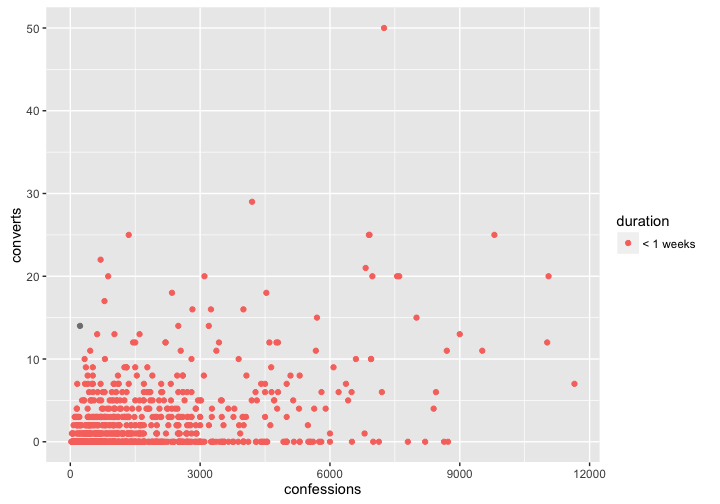
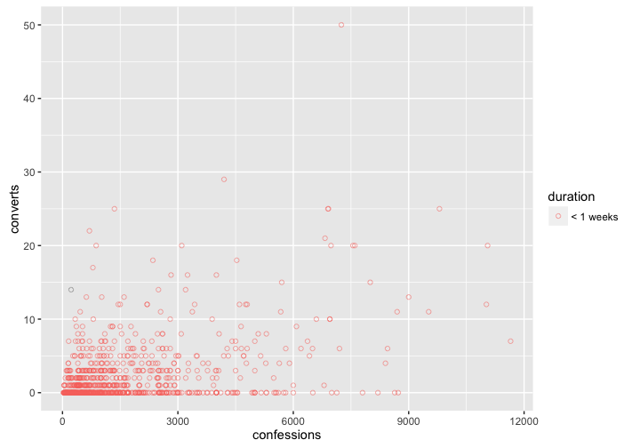
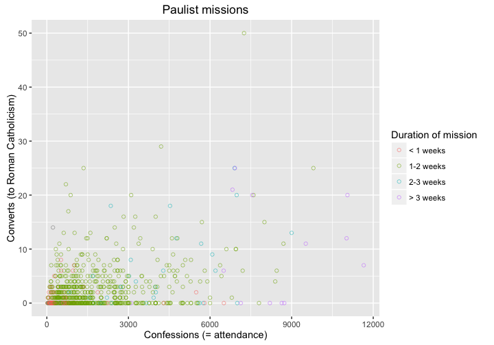
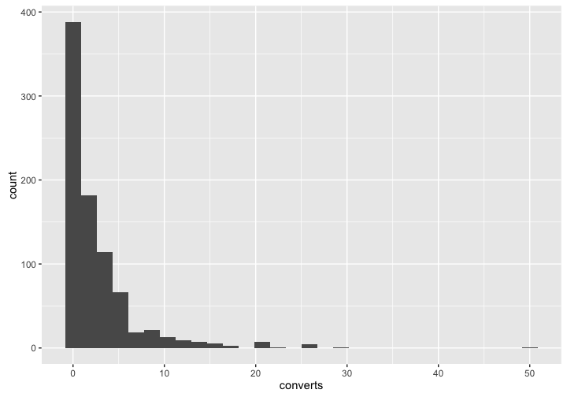
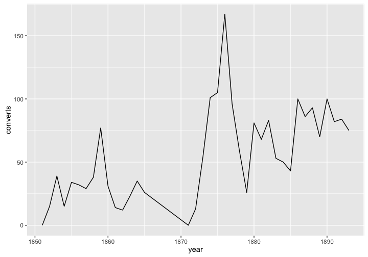
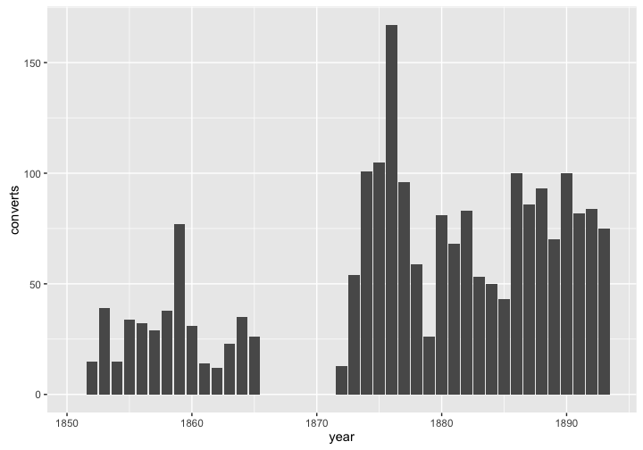
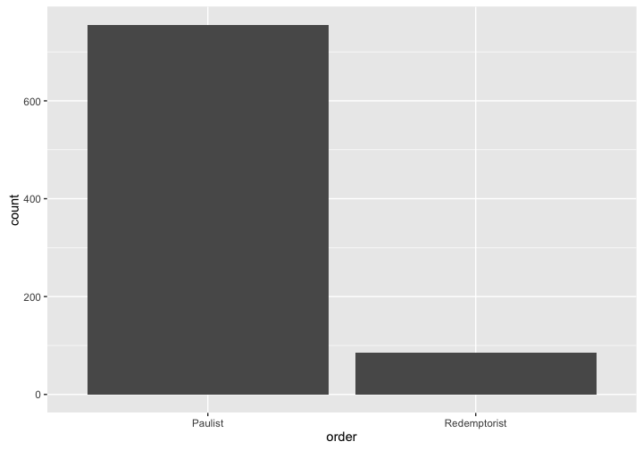
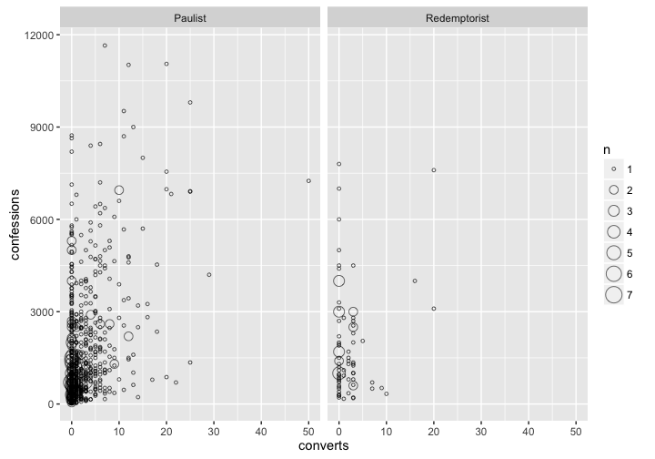

Download this worksheet as a .Rmd
Basics of ggplot2
Aim of this worksheet
After completing this worksheet, you should be able to use the powerful ggplot2 to make basic plots using the grammar of graphics. You may find the ggplot2 documentation or the R Graph Catalog to be helpful.
In addition to the ggplot2 package, we will use three packages with sample data, and we will load dplyr to get nice printing of data frames. Let’s load them now, and also bring some of the data frames into the global environment.
library(ggplot2)
library(dplyr)
library(gapminder)## Warning: package 'gapminder' was built under R version 3.2.3data("gapminder")
library(historydata)
data("paulist_missions")
data("naval_promotions")
library(europop) # https://github.com/mdlincoln/europop
data("europop")
# Make the Paulist missions data a little more mangeable
library(lubridate)## Warning: package 'lubridate' was built under R version 3.2.3weeks <- function(x) {
w <- ifelse(x < 7, "< 1 weeks",
ifelse(x <= 14, "1-2 weeks",
ifelse(x <= 21, "2-3 weeks",
"> 3 weeks")))
factor(w, levels = c("< 1 weeks", "1-2 weeks", "2-3 weeks", "> 3 weeks"),
ordered = TRUE)
}
paulist_missions <- paulist_missions %>%
mutate(start_date = mdy(start_date),
end_date = mdy(end_date),
year = year(start_date),
days = as.numeric(end_date - start_date) / 24 / 60 / 60,
duration = weeks(days)) ## Warning: 1 failed to parse.paulists_by_year <- paulist_missions %>%
group_by(year) %>%
summarize(converts = sum(converts, na.rm = TRUE),
confessions = sum(confessions, na.rm = TRUE))Basics of using ggplot2
The fundamental insight of the grammar of graphics is the variables in the data can be mapped to aesthetics in the visualization. A variable in a data frame will be found in a column. An aesthetic in ggplot2 can take many forms, depending on the kinds of marks (glyphs) that you are going to make in the plot. But the most common aesthetics are x and y position, size, color, fill, shape and weight. Some less common but still useful are label and linetype. The ggplot2 package lets us explicitly set which variables are mapped to which marks using the aes() function.
The three basic parts of a call to ggplot2 are these:
- The specification of which dataset you are using by passing a variable to the
ggplot()function as its first argument. - The specification of which variables map to which aesthetics, using arguments to the
aes()function. Theaes()function is normally passed as the second argument toggplot()(though it can also be specified in the various geoms). - At least one layer in the plot that makes a mark (or glyph). This is specified by one of the geoms, such as
geom_point().
Consider this basic plot. First, let’s look at the date.
paulist_missions## Source: local data frame [841 x 14]
##
## mission_number church city state
## (int) (chr) (chr) (chr)
## 1 1 St. Joseph's Church New York NY
## 2 2 St. Michael's Church Loretto PA
## 3 3 St. Mary's Church Hollidaysburg PA
## 4 4 Church of St. John Evangelist Johnstown PA
## 5 5 St. Peter's Church New York NY
## 6 6 St. Patrick's Cathedral New York NY
## 7 7 St. Patrick's Church Erie PA
## 8 8 St. Philip Benizi Church Cussewago PA
## 9 9 St. Vincent's Church (Benedictine) Youngstown PA
## 10 10 St. Peter's Church Saratoga NY
## .. ... ... ... ...
## Variables not shown: start_date (time), end_date (time), confessions
## (int), converts (int), order (chr), lat (dbl), long (dbl), year (dbl),
## days (dbl), duration (fctr)Now let’s make a scatter plot.
ggplot(paulist_missions, aes(x = confessions, y = converts)) +
geom_point()## Warning: Removed 6 rows containing missing values (geom_point).
- What are the three parts of the plot, as listed above?
- What is the relationship between each row in the dataset and each glyph in the plot?
- Modify that plot so that converts are on the x-axis and confessions are y-axis.
We can specify more than two variables and aesthetics if we wish. Here we map the duration (notice: a categorical variable) to color.
ggplot(paulist_missions, aes(x = confessions, y = converts,
color = duration)) +
geom_point()## Warning: Removed 6 rows containing missing values (geom_point).
We can also specify static properties, These can go either in the call to ggplot() if they affect the entire plot, or in a specific layer (one of the geom_*() functions) if they affect just that layer.
We might notice that our chart suffers from overplotting: the points are on top of each other and we can’t distinguish between them. Let try changing the shape of each point, and try making each point slightly transparent to see if this helps. Notice that in the code below, those properties are specified with static values outside of the aes() function.
ggplot(paulist_missions, aes(x = confessions, y = converts,
color = duration)) +
geom_point(alpha = 0.5, shape = 1)## Warning: Removed 6 rows containing missing values (geom_point).
- Make a different plot from any of the above using
days,converts, andconfessionsvariables. Try using thex,y, andsizeproperties.
We can change the labels of the plot using the labs() function as below. (Alternatively, you can use the xlab(), ylab(), and ggtitle() functions.)
ggplot(paulist_missions, aes(x = confessions, y = converts,
color = duration)) +
geom_point(alpha = 0.5, shape = 1) +
labs(title = "Paulist missions",
x = "Confessions (= attendance)",
y = "Converts (to Roman Catholicism)",
color = "Duration of mission")## Warning: Removed 6 rows containing missing values (geom_point).
- Copy your plot above and add informative labels.
Basic geoms in ggplot2
So far we have only used points (with geom_point()) as the meaningful glyphs in our plot. Now we will take a tour of different kinds of glyphs that are available to us in ggplot2. Not every variable is suited to every kind of glyph, and sometimes we have to aggregate our data to make certain kinds of plots. (The data aggregation will be covered in a later worksheet.)
Histogram
A histogram shows the distribution of values in a dataset by “binning” the data: in other words, it takes the domain of the data, splits it into different bins, then counts how many values faall into each bin. One bar is drawn for each bin. Here we count the kinds o
ggplot(paulist_missions, aes(x = converts)) +
geom_histogram()## `stat_bin()` using `bins = 30`. Pick better value with `binwidth`.
Create a histogram of the number of confessions.
Can you change the number of bins? (Hint: try
bins =orbinwidth =. See?geom_histogram.)
Lines
Lines are good for showing trends.
ggplot(paulists_by_year, aes(x = year, y = converts)) +
geom_line()
Create a line chart of the number of confessions. Can you also add a layer of points in addition to the line?
Can you create a line chart with a line for the number of converts and a line for the number of confessions? (Hint: you will need two calls to
geom_line(). And instead of specifying theyvalue in the call toggplot()you will do it in the functons for each layer. For instance:geom_line(aes(y = converts)).)Can you create a plot with a single line for the ratio of converts to confessions? (Hint: the ratio of converts to confessions is given by
converts / confessions.)
If you map color = to a categorical value, you will get a different colored line for each category.
Bar plots
Bar plots can be used in much the same way as a line plot if you specify stat = "identity". That call tells ggplot to use a y value that is present in the data.
ggplot(paulists_by_year, aes(x = year, y = converts)) +
geom_bar(stat = "identity")
But bar plots are better used for counts of categorical variables. Here we count the number of missions done by the Paulists and the Redemptorists.
ggplot(paulist_missions, aes(x = order)) +
geom_bar(stat = "count")
- Create a plot with a count of the number of missions in each state.
Faceting
Faceting is not a geom like the examples above, but it can create a separate panel in a plot for different categories in the data. For instance, in the plot below, we have created a separate panel for each
ggplot(paulist_missions, aes(x = converts, y = confessions)) +
geom_count(shape = 1, alpha = 0.6) +
facet_wrap(~ order)## Warning: Removed 6 rows containing non-finite values (stat_sum).
Create a plot with facets for each state.
Notice that we are using
geom_count(). What does it do? (Hint:?geom_count.)
Create your own plots
There are a number of data sets available to you. You may try using early_colleges, catholic_dioceses, naval_promotions, quasi_war, sarna, us_national_population, or us_state_populations (all from the historydata package), gapminder (from the gapminder package), or europop (from the europop package).
Create three plots below, using any one or more than one of those datasets. Your three plots should try to make some kind of historical observation. For each plot, include no more than three sentences explaining what you think the plot means. You should try to make each plot as informative as possible by using different geoms and including as many variables as is reasonable in each plot. Be sure to add good titles and labels.
You may wish to look at the R Graph Catalog to find examples of what you can do with ggplot along with sample code.
- Plot 1
Explanation of plot 1.
- Plot 2
Explanation of plot 2.
- Plot 3
Explanation of plot 3.